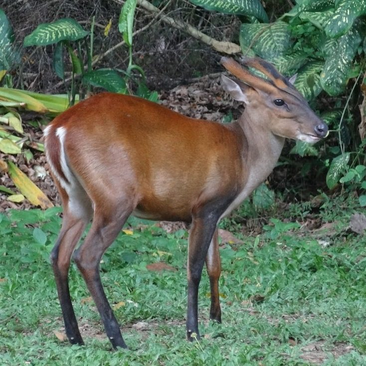

काकड़Barking Deer
Muntiacus muntjak · Cervidae · MAM-0038

- Scientific name वैज्ञानिक नाम
- Muntiacus muntjak (Zimmermann, 1780)
- Family कुल
- Cervidae
- Hindi हिंदी
- काकड़
- Local names स्थानीय नाम
- kakar, ratwa, kursiar, barking deer, rib-faced deer
- Status here यहाँ की स्थिति
- native
- Movement आवागमन
- Resident, here all year
- Known from कहाँ दर्ज
- Others have published records from the wider Awadh–Purvanchal plain, none yet from Basti–Ayodhya अवध–पूर्वांचल से दूसरों के प्रकाशित अभिलेख, बस्ती–अयोध्या से अभी नहीं
- IUCN IUCN
- LC
- Review समीक्षा
- not yet reviewed
When to look कब देखें
Present all year. साल भर मौजूद।
Tell it apart from इनसे अलग पहचानें
काकड़ / Barking Deer
Muntiacus muntjak (Zimmermann, 1780) — Cervidae
काकड़ — तराई के घने साल के जंगलों और बांस के झुरमुटों में रहने वाला एक छोटा, शर्मीला और एकांतप्रिय हिरण है। इसका शरीर गहरा चमकदार कत्थई-लाल (चेस्टनट) होता है। नर हिरण के सिर पर बालों से ढके लंबे खंभों (पेडिसल्स) के ऊपर छोटे सींग होते हैं, और उसके ऊपरी जबड़े से नीचे की ओर नुकीले तीखे कैनाइन दांत (दाढ़ें) बाहर निकले रहते हैं। खतरे का अहसास होते ही यह जंगल में कुत्ते के भौंकने जैसी तेज और तीखी आवाज निकालता है जो काफी दूर तक गूंजती है।
Quick Identification त्वरित पहचान
| Feature | Description |
|---|---|
| Habit | Small, solitary, stocky forest deer creeping through dense undergrowth |
| Pelage | Rich glossy chestnut-red or bright rufous-brown, unspotted in adults |
| Antlers | Short single-forked horns mounted on long, hair-covered bony pedestals |
| Facial Ridges | Two prominent dark bony ridges running down the forehead (rib-faced deer) |
| Canines | Elongated, downward-projecting tusk-like upper canines in males |
| Posture | Sloping carriage with hindquarters slightly higher than the withers |
| Alarm Call | Extremely loud, sharp, dog-like barking uttered repeatedly when alarmed |
Field tip: Listen along dense sal ravines at dawn or dusk for a startling canine bark echoing through the trees. If glimpsed darting through tangled bamboo, its small stocky build, bright chestnut coat, and downward-curved head carriage confirm the Barking Deer.
हिंदी:
यह छोटे आकार का गहरे लाल-कत्थई रंग का हिरण है जिसके चेहरे पर दो काली लकीरें होती हैं।
नर के ऊपरी जबड़े से दो छोटे नुकीले दांत बाहर निकले होते हैं और सींग छोटे होते हैं।
खतरा भांपने पर यह बिल्कुल कुत्ते की तरह जोर-जोर से 'भौंकता' है।
Morphology आकारिकी
Measurements as given by Blanford (1891 as "Cervulus muntjac"):
| Measurement | Range |
|---|---|
| Height at shoulder | 20 to 22 inches (Blanford 1891) |
The Barking Deer is an ancestral, small-bodied cervid featuring remarkable anatomical adaptations. In adult stags, the antlers are short and simple, rarely exceeding a few inches in length, and are carried atop remarkably long, hair-clothed bony pedicels that rise directly from the frontal bones.
A prominent V-shaped pair of raised bony ridges extends from the base of each antler pedicel down the forehead toward the nose, enclosing two facial scent glands.
The adult male possesses extraordinarily elongated, saber-like upper canine teeth that protrude downward past the lower lip, used effectively in territorial defense and combat with rival males.
The coat is deep, rich chestnut-red on the upper body, shading into brownish-grey on the limbs and forehead. The throat, chin, and underparts are paler, while the underside of the short tail is pure white, flashed conspicuously during flight.
Vocalisations. Renowned for its loud, resonant alarm call that sounds astonishingly like the sharp bark of a large domestic dog. Stags also emit low clicking or rattling sounds during courtship.
हिंदी:
कंधे पर इसकी ऊंचाई 20 से 22 इंच होती है।
इसका सिर आगे की ओर झुका रहता है और पिछले हिस्से की ऊंचाई थोड़ी अधिक दिखती है।
नर के ऊपरी दांत शिकारियों और प्रतिद्वंद्वी नर से लड़ने के लिए तेज हथियार का काम करते हैं।
Behaviour & Ecology व्यवहार और पारिस्थितिकी
Muntiacus muntjak is an intensely solitary animal that avoids open spaces and herds. Individuals maintain small, fiercely defended home ranges in dense, tangled forest undergrowth where visual detection is nearly impossible.
It moves with great stealth through thick brush, ducking its head low beneath tangled briars and running with agile, bounding leaps when startled. When it suspects the presence of a leopard or tiger, it stands motionless in the bushes and utters its piercing canine bark at regular intervals, sometimes continuing for over an hour until the predator moves away.
हिंदी:
यह हमेशा अकेला या जोड़े में रहता है और कभी बड़े झुंड नहीं बनाता।
यह घनी कंटीली झाड़ियों के नीचे सिर झुकाकर बहुत तेजी से भाग सकता है।
Life Cycle / Phenology जीवन चक्र
Blanford (1891, p. 534) records from Hodgson that the rutting-season in Northern India is chiefly in January and February, and the young are born, as a rule, in June and July, though some young are said to be produced throughout the year. The female has one or two young at a birth (Blanford 1891, p. 534).
The horns of the male fall in May and the new horns are perfect in August (Blanford 1891, p. 534).
हिंदी:
ब्लैनफोर्ड (1891, पृ. 534) के अनुसार उत्तर भारत में मद का समय मुख्य रूप से जनवरी और फरवरी में होता है और बच्चे जून-जुलाई में पैदा होते हैं।
मादा एक या दो बच्चों को जन्म देती है। नर के सींग मई में गिरते हैं और अगस्त में नए सींग तैयार हो जाते हैं।
Host Plants or Prey आहार
The Barking Deer is an opportunistic, highly selective browser and frugivore that feeds on energy-rich forest items:
- Fallen wild fruits and berries of Ziziphus, Ficus, and Emblica officinalis (amla)
- Tender shoots, leaves, and buds of sal (Shorea robusta) and forest herbs
- Fallen flowers of Madhuca longifolia (mahua) during the spring bloom
- Soft grasses and delicate herbs gleaned from forest trails at dawn
- Fungi, mushrooms, and tender roots exposed by digging with its hooves
Its flexible tongue and slender muzzle allow it to pick out delicate, highly nutritious plant tissues while rejecting tough, fibrous stems.
हिंदी:
यह मुख्य रूप से गिरे हुए जंगली फल, महुआ के फूल, आंवला और कोमल पत्तियां खाता है।
यह जमीन पर उगी बारीक हरी घास और जंगली मशरूम भी तलाश कर खाता है।
Predators / Natural Enemies शत्रु
The Tiger (Panthera tigris) and Leopard (Panthera pardus) are the principal natural enemies of the Barking Deer (Blanford 1891, p. 534).
हिंदी:
बाघ और तेंदुआ काकड़ के मुख्य प्राकृतिक शिकारी हैं (ब्लैनफोर्ड 1891)।
Agricultural / Human Relevance कृषि प्रासंगिकता
The Barking Deer is an herbivorous browser, feeding on forest foliage, fallen fruits, and tender shoots (Blanford 1891, p. 533). It is protected under the Wildlife (Protection) Act, 1972.
हिंदी:
काकड़ एक शाकाहारी हिरण है, जो जंगल की पत्तियों, गिरे हुए फलों और कोमल टहनियों को खाता है (ब्लैनफोर्ड 1891)। यह वन्यजीव (संरक्षण) अधिनियम, 1972 के तहत संरक्षित है।
Expected Locally स्थानीय रूप से अपेक्षित
Not a field record. Written from published accounts for eastern Uttar Pradesh. No confirmed local sighting yet — if you have seen it, that is what the atlas needs.
अभी तक स्थानीय पुष्टि नहीं। यह विवरण प्रकाशित स्रोतों से है, किसी अवलोकन से नहीं।
Look in dense bamboo ravines, tangled vine nullahs, and moist sal undergrowth in the northern Terai forests.
GBIF holds published records from the wider Awadh–Purvanchal plain, none yet from Basti–Ayodhya.
A first record would be a photograph of the animal with place and date, sent through the About page.
Distribution वितरण
Global range: Widespread across South Asia and Southeast Asia, from India and Nepal eastward to southern China, the Malay Peninsula, and the Indonesian archipelago.
Regional status: Resident in dense moist deciduous forest belts in northern Uttar Pradesh, particularly within Dudhwa National Park, Katarniaghat, and Sohelwa Wildlife Sanctuaries.
हिंदी:
यह भारत, नेपाल, भूटान, चीन और दक्षिण-पूर्व एशिया के घने पहाड़ी व मैदानी जंगलों में पाया जाता है।
Research Questions शोध प्रश्न
- How do Muntiacus muntjak vocalization rates change in response to different predator scent intensities in sal forests? / तेंदुए या बाघ की गंध मिलने पर काकड़ के भौंकने की आवृत्ति में क्या अंतर आता है?
- What is the spatial density of solitary barking deer home ranges in undisturbed forest compared to degraded buffer zones? / संरक्षित घने जंगल और कटे-फटे जंगल में इसके इलाके के आकार में क्या अंतर होता है?
- How effectively do tusk-inflicted wounds deter territorial rivals during stag combat?
- What proportion of the diet consists of fallen wild fruits during seasonal mast fruiting events?
- Can acoustic sensor networks accurately distinguish barking deer alarm calls from domestic dog barks in forest-fringe villages? (Field recordings of barking cadences help document local occupancy.)
Similar Species मिलती-जुलती प्रजातियाँ
| Species | How to tell apart | हिंदी | |
|---|---|---|---|
| [[spotted_deer\ | Spotted Deer]] (Axis axis) | Substantially larger; bright golden-rufous coat permanently patterned with white spots; long three-tined antlers | चित्रा / चीतल |
| [[leopard\ | Leopard]] (Panthera pardus) | Large feline carnivore; golden coat with black rosettes; primary predator of barking deer | तेंदुआ |
Field rule: The diminutive stocky build, bright unspotted chestnut coat, raised facial ridges, long hairy antler pedicels, and dog-like barking call distinguish the Barking Deer from all other deer.
हिंदी:
चीतल आकार में काफी बड़ा और सफेद चित्तीदार होता है; काकड़ छोटा, बिना चित्ती का और भौंकने वाला होता है।
Taxonomy & Classification वर्गीकरण
Original description. Described by Eberhard August Wilhelm von Zimmermann in 1780 in Geographische Geschichte des Menschen (vol. 2, p. 131), under the basionym Cervus muntjak. Formerly treated under "Cervulus muntjac" by Blanford (1891).
Subspecies. Multiple subspecies are recognized; northern Indian mainland populations are frequently referred to the northern red muntjac "Muntiacus muntjak vaginalis" (Boddaert, 1785), sometimes treated as a full species Muntiacus vaginalis. GBIF classifies the taxon under Muntiacus muntjak.
Family and order placement. Order Artiodactyla; family Cervidae (true deer); subfamily Cervinae.
IUCN status rationale. Evaluated as Least Concern (LC) by the IUCN Red List due to an extremely wide geographical distribution and substantial populations in protected reserves across Asia.
हिंदी:
जिमरमैन ने 1780 में इसका वर्णन किया था। यह सर्व्हिडे कुल का सदस्य है और वैश्विक स्तर पर सुरक्षित माना जाता है।
Photo Gallery फोटो गैलरी
No photos yet — add field photos to media/species/barking_deer/ and run node scripts/sync_photos.js.
Photos needed आवश्यक फोटो
- [ ] Adult male showing short antlers and facial ridges in sal understory (साल के पत्तों के बीच खड़ा नर काकड़)
- [ ] Barking deer running with raised white-underside tail (पूंछ उठाकर भागता हिरण)
References संदर्भ
- Zimmermann, E. A. W. (1780). Geographische Geschichte des Menschen, vol. 2. Weygandschen Buchhandlung, Leipzig, p. 131 (as Cervus muntjak).
- Blanford, W. T. (1891). The Fauna of British India, Including Ceylon and Burma. Mammalia. Taylor & Francis, London, p. 532 (as "Cervulus muntjac").
- Lydekker, R. (1898). The Deer of All Lands. Rowland Ward, London, p. 203.
- Menon, V. (2014). Indian Mammals: A Field Guide. Hachette India, Gurgaon.
- Timmins, R. J. et al. (2016). Muntiacus muntjak. The IUCN Red List of Threatened Species 2016: e.T42190A56005589.
- GBIF Occurrence Data — Muntiacus muntjak (Zimmermann, 1780), India (2025).
Source file: species/fauna/mammals/barking_deer.md